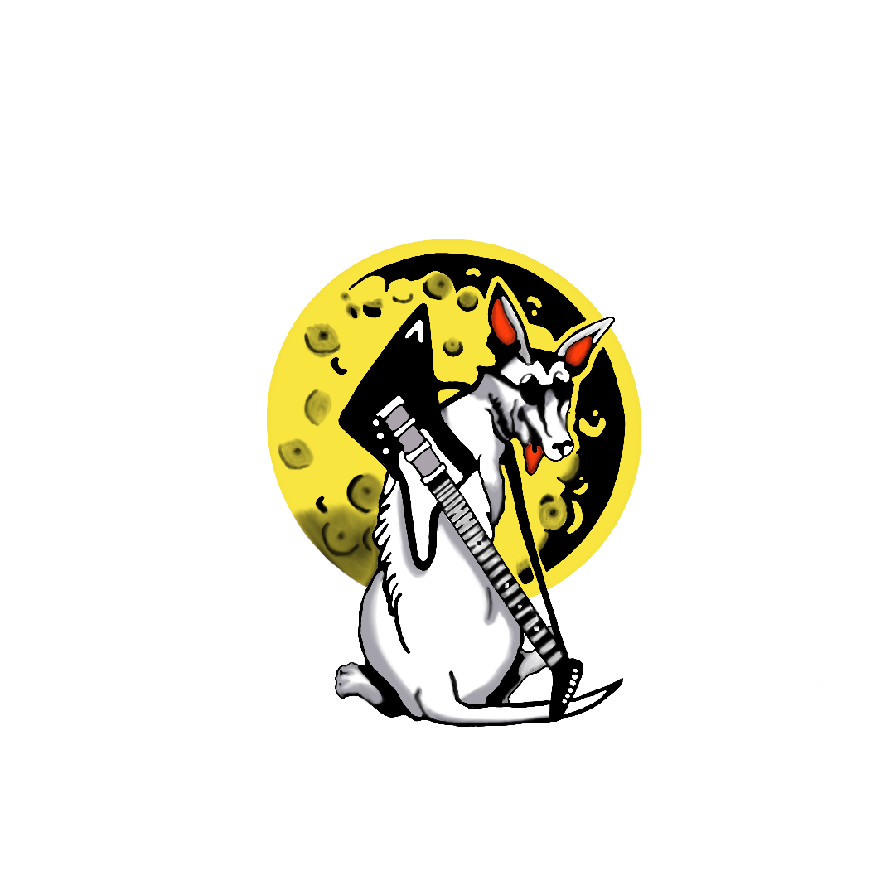

MOONDOG'S
Owner Ron Esser, the ”Big Dog”, opened Moondog’s in 1990 next door to his family’s Starlite Lounge restaurant It is located at 378 Freeport Road on the main drag of the tiny 1,400 person mill town of Blawnox. Three miles North of Pittsburgh on the banks of the Allegheny River. In 2005 Moondogs was honored with the “Keeping the Blues Alive Award” from the National Blues Foundation in Memphis, TN. Ron Esser founded Moondog Records to support Pittsburgh area musicians.